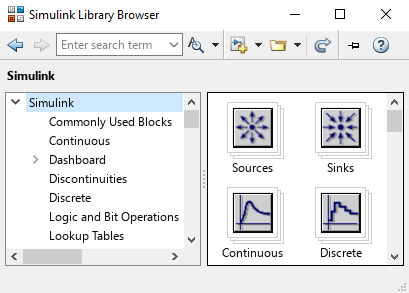
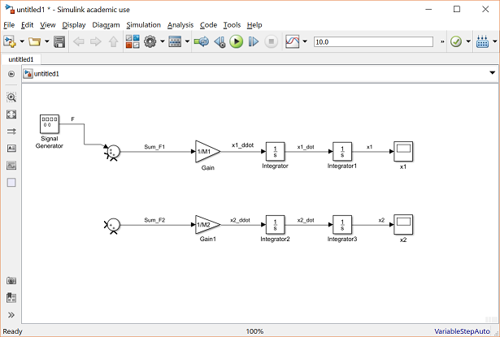

Simulink is a graphical environment integrated with MATLAB for modeling, simulating, and analyzing multidomain dynamic systems using block diagrams instead of writing lines of code.
🖥️ Setting Up Simulink
Simulink is included with MATLAB but requires a separate license.
Open Simulink by typing simulink in the MATLAB command window or clicking the Simulink icon.
You’ll see the Simulink Library Browser with lots of pre-built blocks for math, logic, control systems, signal processing, and more.
📷 Simulink Interface Screenshots


📝 Example: Simple Signal Addition
Output will appear here...
💡 Tip: Use Simulink for rapid prototyping of control systems, signal processing, and physical systems without deep coding.